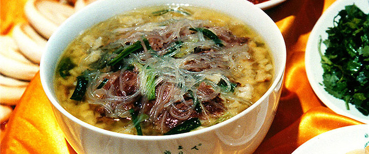
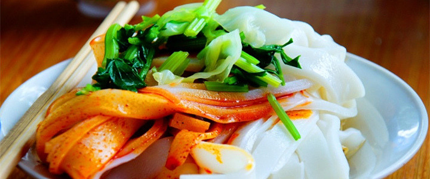
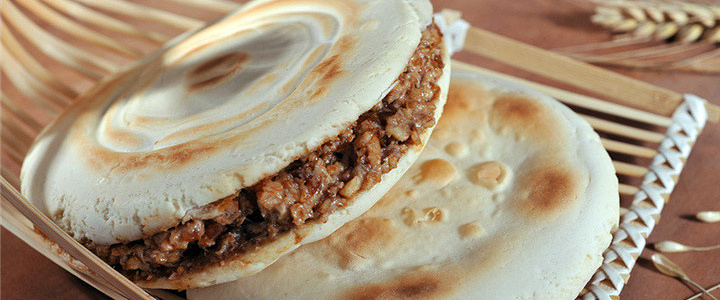
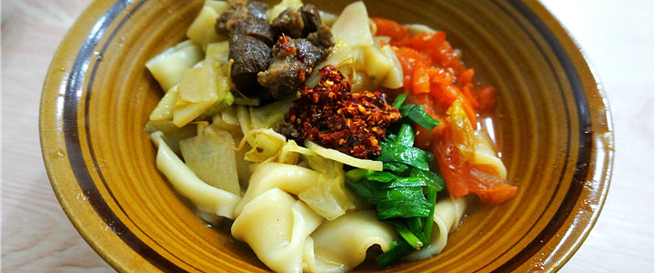
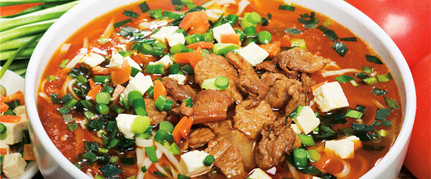

羊肉泡馍

羊肉泡馍可以说是西安的标志性小吃了，使用优质牛羊肉加佐料入锅煮烂，汤汁备用。把烙好的坨坨馍，掰成碎块，加辅料煮制而成。其特点是肉烂汤浓、香醇味美。通常是配合一小碟特质糖蒜和辣椒酱，香浓肉味加一点点甜和辣，形成了口感上的极致体验。吃完后再来一小碗高汤，更觉余香满口，回味悠长。在西安回民街的一些泡馍馆子里，顾客还可以自己手撕膜片，DIY属于自己的秦味美食。
陕西凉皮

陕西凉皮多使用小麦面粉制作，也有米粉或其他淀粉制作的。一般凉拌食用（但在汉中地区，热食更为广泛），种类繁多，制作方法各异，调拌也各具特色，口味不同。主要有：麻酱凉皮、秦镇米皮、汉中面皮、岐山擀面皮、面筋凉皮等。凉皮历史久远，凉皮传说源于秦始皇时期，距今已有两千多年历史，相传有一年陕西户县秦镇一带大旱，稻谷枯萎，百姓无法向朝廷纳供大米，有个叫李十二的用大米碾成面粉，蒸出面皮，献给秦始皇，秦始皇吃后大喜，命每天制作食用，形成了久负盛名的传统小吃。西安户县的秦镇米皮尤为著名，来西安旅游是一定要品尝一下的。
肉夹馍

西安可以称得上是一座“馍”力四射的城市，美食都离不开这神奇的食物——“馍”。肉夹馍，实际是两种食物的绝妙组合：腊汁肉，白吉馍。肉夹馍合腊汁肉、白吉馍为一体，互为烘托，将各自滋味发挥到极致。馍香肉酥，回味无穷。腊汁肉夹馍由三十多种调料精心配制而成，由于选料精细，加上使用陈年老汤，因此所制的腊汁肉与众不同，具有肉质软糯，浓郁醇香的独特风味。除了一般猪肉作为原料的腊汁肉夹馍之外，别具风味的腊牛肉夹馍同样会让你大饱口福。
biiangbiang面

陕西关中素来以面食的多种多样而著称，面食样式繁多，有旗花面、扯面、拉面、棍棍面、麻什等。更有一种面，因为在扯面时敲击案板发出“biangbiang”的声音而得名，面宽且长，就像古时候人系在身上的裤带一样，故又名“裤带面”。后来有人专门造了一个biang字，并编了个顺口溜来方便记忆：“一点冲上天，黄河两道湾；八字大开口，言字往里走；你一扭，我一扭；你一长，我一长，中间夹个马大王；心字低，月字旁；定个钩钩挂麻糖，推个车车逛咸阳。”
臊子面

陕西关中地区自古就有周人斩龙和面而食的传说，而后将龙肉以猪肉代替，就是今天著名的臊子面了。臊子就是肉丁的意思，而一碗臊子面，臊子汤才是它的灵魂！精瘦肉、萝卜、豆腐、鸡蛋、青菜切丁，辅以酸辣风味佐料，可谓“面白薄筋光，油汪酸辣香”。面条细长，厚薄均匀，臊子鲜香，红油浮面，汤味酸辣，筋韧爽口，老幼皆宜。